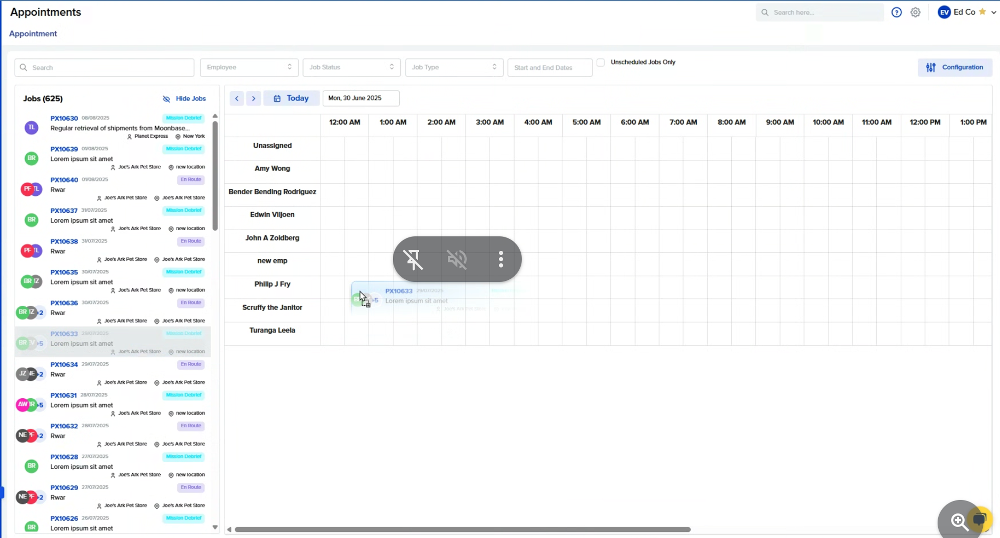
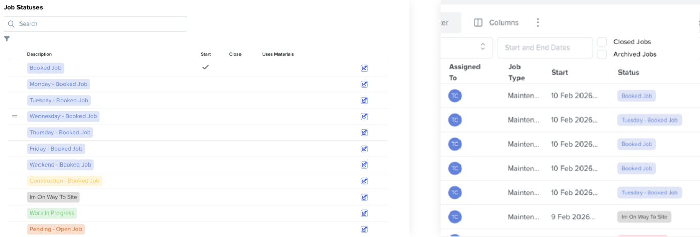
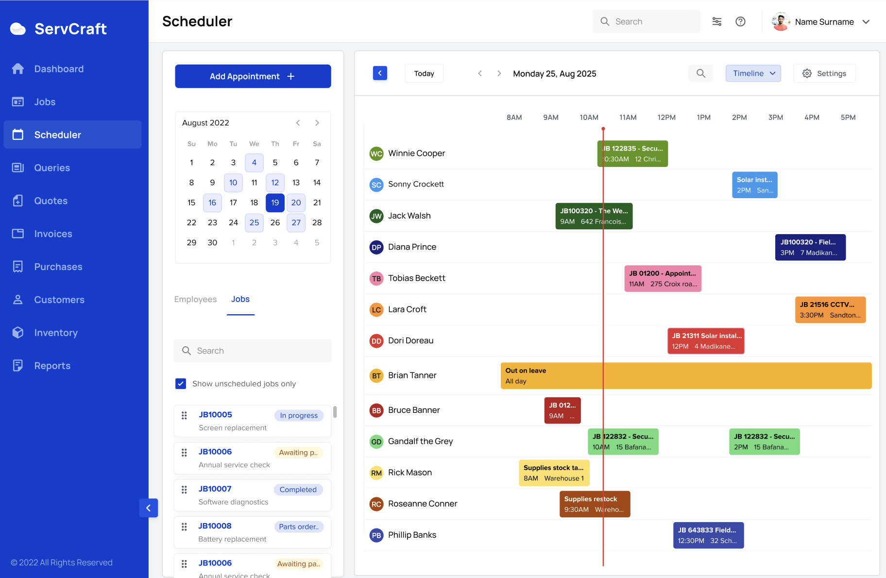
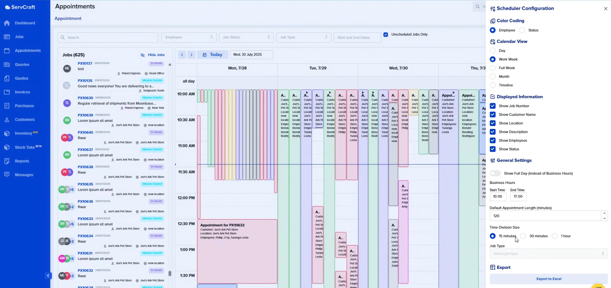
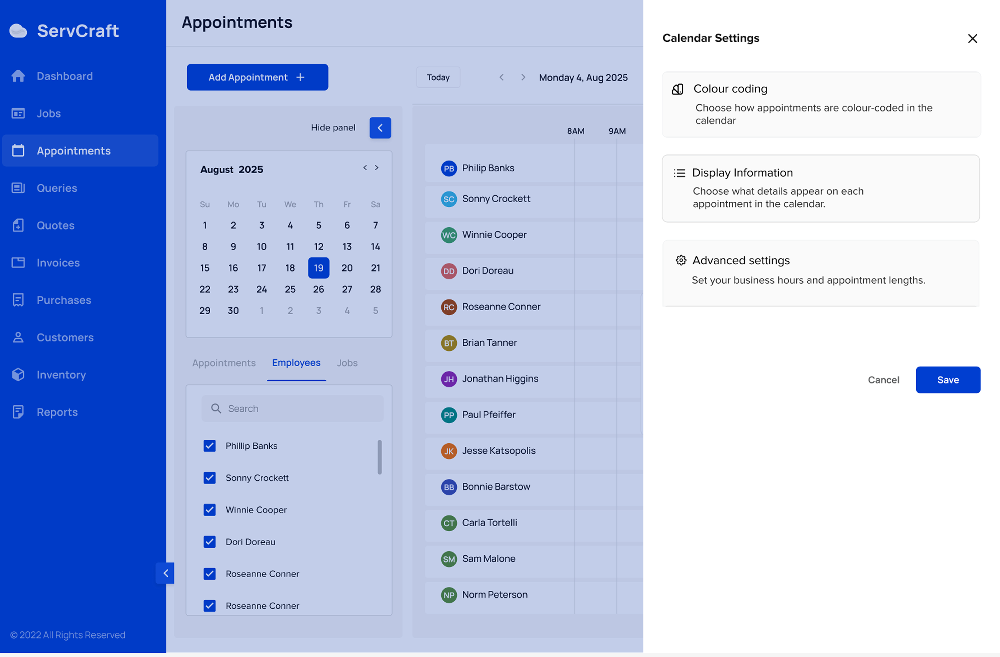
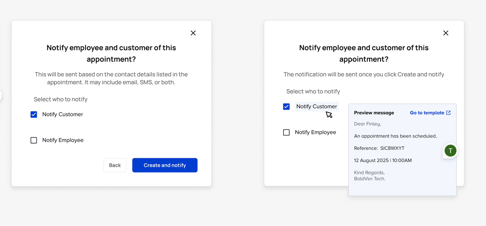

Security, plumbing, HVAC and similar service industries


I led the UX and UI redesign of the Appointments module at ServCraft, a field service management platform used by medium to large businesses across South Africa.
What started as a cluttered, unpredictable scheduler became an intuitive, transparent tool that field teams could trust with their daily operations.
To comply with legal requirements, I have omitted and obfuscated confidential information in this case study. All information in this case study is my own and does not necessarily reflect the views of ServCraft.
ServCraft serves the complex, high-volume operations of South African service businesses: security firms, plumbers, HVAC companies, and similar industries. At the heart of daily operations sits the scheduler. The tool teams rely on to coordinate jobs, appointments, and technicians across the day.
Over time, it had accumulated features, patches, and workarounds. It still functioned, but not well. Customers were vocal about it. Support tickets piled up. Users were inventing their own workarounds just to get through the day. Some sent in their own diagrams of how scheduling actually works for them on the tools they use.

Original scheduler screen

Customer suggestion
The scheduler was deeply embedded in the daily routines of an active, vocal user base. Any misstep would be felt immediately by users, and the ServCraft support team fielding the fallout.
My goals were to make the scheduling experience intuitive and predictable for both admin users and field technicians, give users visibility and control over the system's behaviour, and scope the redesign feasibly within the team's engineering bandwidth.
I was the sole designer on a cross-functional team of three developers, one product manager, and one QA engineer. I owned the end-to-end design process from initial research and evaluation through to final UI delivery and handoff. The team was hybrid: I worked fully remotely alongside one other remote team member, with the rest based in the office. Strong async communication, thorough documentation, and structured handoffs were crucial parts of the process.
The project began with users telling us something was wrong. Support tickets consistently flagged the scheduler as confusing and unreliable. What sharpened the picture most was the customers who went further, writing in to describe how they thought the scheduler should work, and sharing screenshots of their own systems as reference.
One customer wrote:
"The current ServCraft dashboard appears quite busy, with all jobs displaying in a uniform blue. This makes it difficult to distinguish between job types or statuses at a glance, and we're concerned this could lead to important items being overlooked. Is there a way to customise the dashboard to more closely resemble our existing layout, particularly with the ability to apply colour coding based on job stage?"
This kind of unsolicited, constructive frustration is a signal worth taking seriously. These users were not abandoning the product. They were invested enough to show us exactly how to fix it.
A further symptom surfaced in the data. Customers were creating job statuses named "Monday - Booked Job", "Tuesday - Booked Job", and similar, using a workflow step to do the job the scheduler should have been doing. A status is meant to represent a stage in a job's lifecycle. Using it as a scheduling workaround points directly to a gap in the tool.

Customer using job statuses to indicate jobs to be done on that day
Three factors shaped every decision in this project.
The scheduler had evolved over time, with functionality that was deeply embedded and not always visible. Schedulers are inherently difficult to build. Third-party libraries exist, but they introduce their own risks: limited customisation, dependency on external updates, long-term maintenance overhead, and cost. Whether to build on the existing foundation or introduce new components required careful consideration at every step.
The customer base was highly active and reacted quickly to product changes. This was not a peripheral feature. It was central to how teams ran their day. A poorly managed rollout would not just frustrate users; it would generate a wave of support requests and erode trust at a critical point in the product's maturity.
Engineering capacity was limited. The redesign had to be tightly scoped and strategically phased to remain feasible without pulling the team away from other priorities.
Before moving to solutions, I needed to understand the full shape of the problem. I conducted a heuristic evaluation of the Appointments module, assessing the interface against Nielsen's 10 Usability Heuristics.
Six issues emerged. Three were critical.
"The system automatically sends an email to customers the moment an appointment is created, with no confirmation prompt and no way to stop it. Users have no idea it is happening."
For a tool used by service teams managing real client relationships, this was the kind of silent action that erodes trust fast and carries real consequences for the customer, the user, and ServCraft's reputation.
Beyond that, the page itself did little to orient users on arrival. There were no appointments in view, no guidance, no indication of what to do next. Just a jobs list and an empty calendar. Users were left to piece together the workflow on their own.
Search made things worse. Filtering the jobs list simultaneously collapsed the scheduler, stripping away the very view needed to complete a booking. The two most important tasks on the page; finding a job and scheduling it, could not be done at the same time.
Rounding out the findings: a cluttered settings drawer with no save confirmation, a scheduler that broke down visually as appointment volume grew, and status colours that failed basic accessibility contrast standards.

The evaluation surfaced clear friction points: users arriving on a page with no context, search and scheduling working against each other, a configuration panel that obscured rather than helped, and a system sending emails without permission. Each problem had a corresponding solution.
When users land on the Appointments page, they now see upcoming and relevant appointments without having to search or piece information together. The page communicates its state from the moment it loads, reducing disorientation and giving users a clear starting point for their work.

Re-designed scheduler screen
.png)
Interactive timeline for granular appointment management and scheduling
The search experience was optimized to allow users to filter through vast amounts of data while maintaining the visual context of the scheduler. Results are displayed clearly with actionable statuses, allowing for quick pivots between finding and managing jobs.

Optimized search results view with advanced filtering
The settings panel was rebuilt to group related options into distinct, labelled sections: colour coding, display information, and advanced settings. A clear save action confirms when changes have been applied. Users can now scan, understand, and adjust their configuration without feeling overwhelmed by an undifferentiated list of controls.

Old scheduler settings

Re-designed scheduler settings
The most trust-damaging behaviour in the product was addressed directly. When creating an appointment, users now encounter an explicit notification step: choose who to notify, preview the message before it sends, and decide whether to send at all. Customer communication became a deliberate action, not a side effect.

Transparency and control when creating an appointment
The full redesign never shipped.
Despite a clear brief, strong research, and a well-reasoned solution, the constraints stacked up. Legacy architecture, limited engineering bandwidth, and competing priorities made the cost of shipping the full revamp unreasonably high relative to what the team could absorb at the time.
What did ship were a few targeted improvements: small but meaningful changes that addressed the most urgent pain points without requiring a complete overhaul.
This is the reality most product teams live in. Not every well-designed solution makes it out the door intact. Constraints narrow scope, timelines shift, and sometimes the right call is a smaller win over no progress at all.
The most significant lesson: when users go out of their way to tell you how something should work, that is not noise. That is the brief. The customers who sent in their own scheduling screenshots and colour-coded diagrams were doing the research for us. Getting closer to that signal earlier and aligning on feasibility sooner would have changed what we committed to from the start.